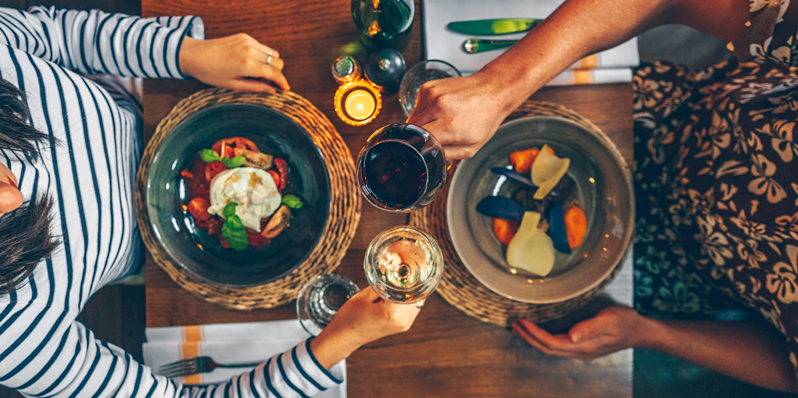
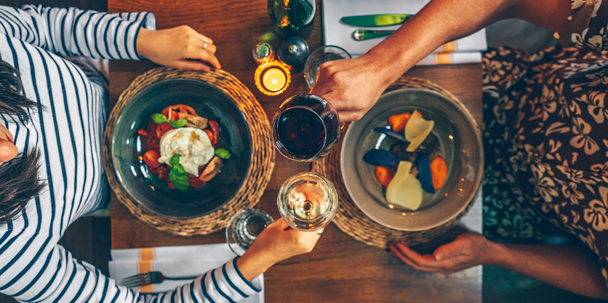
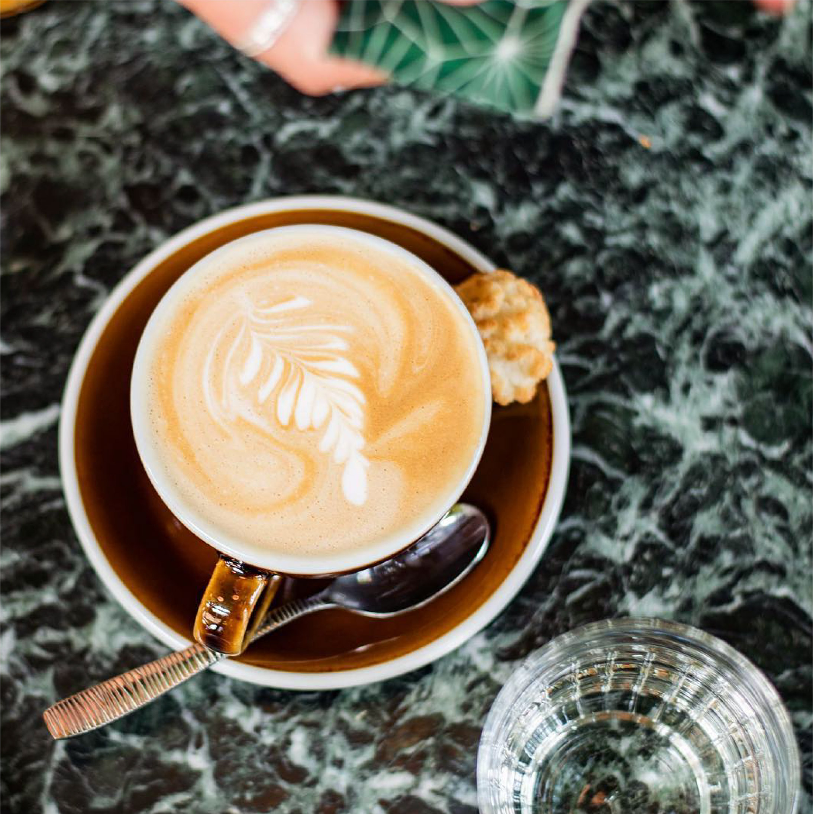
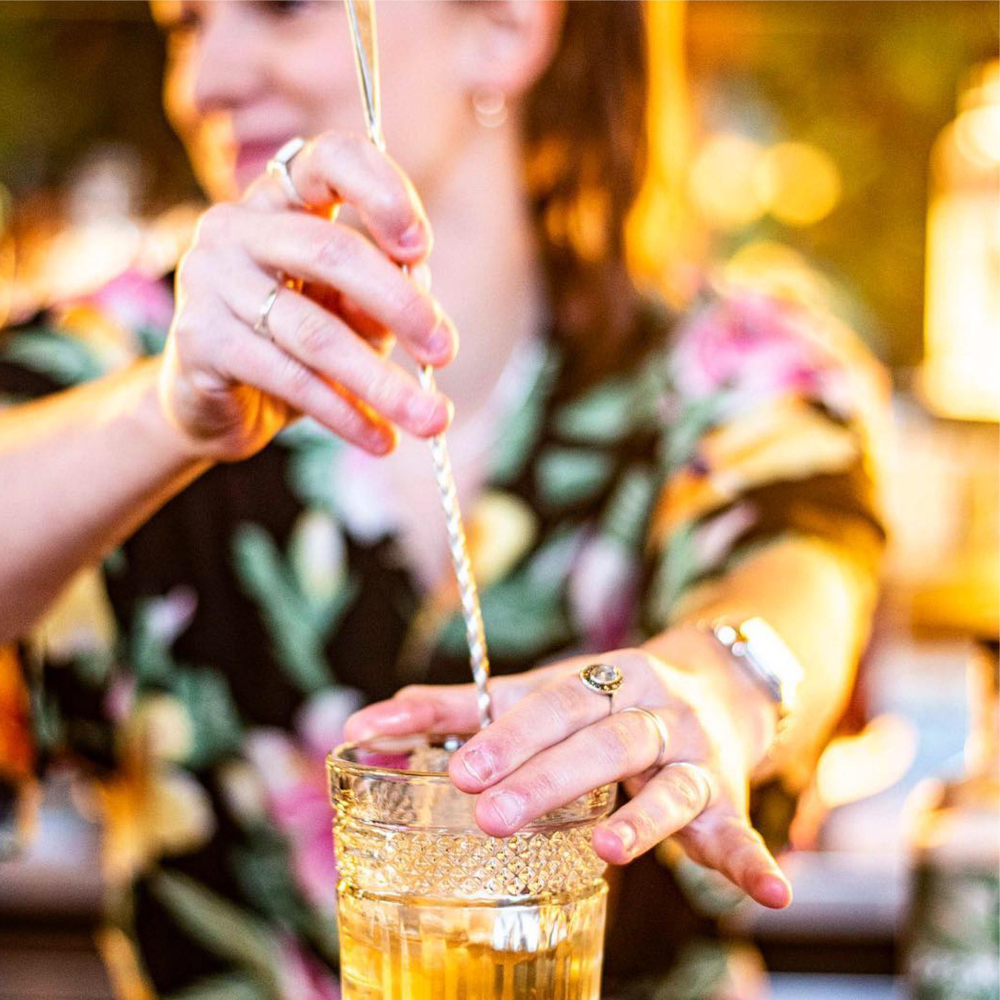
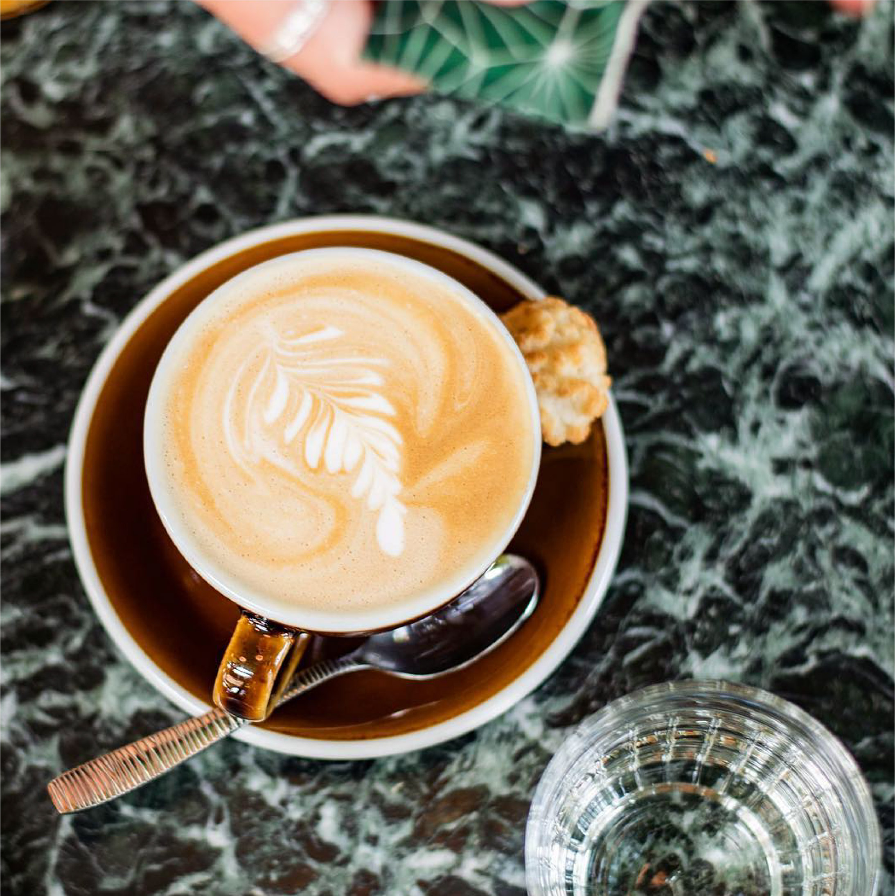
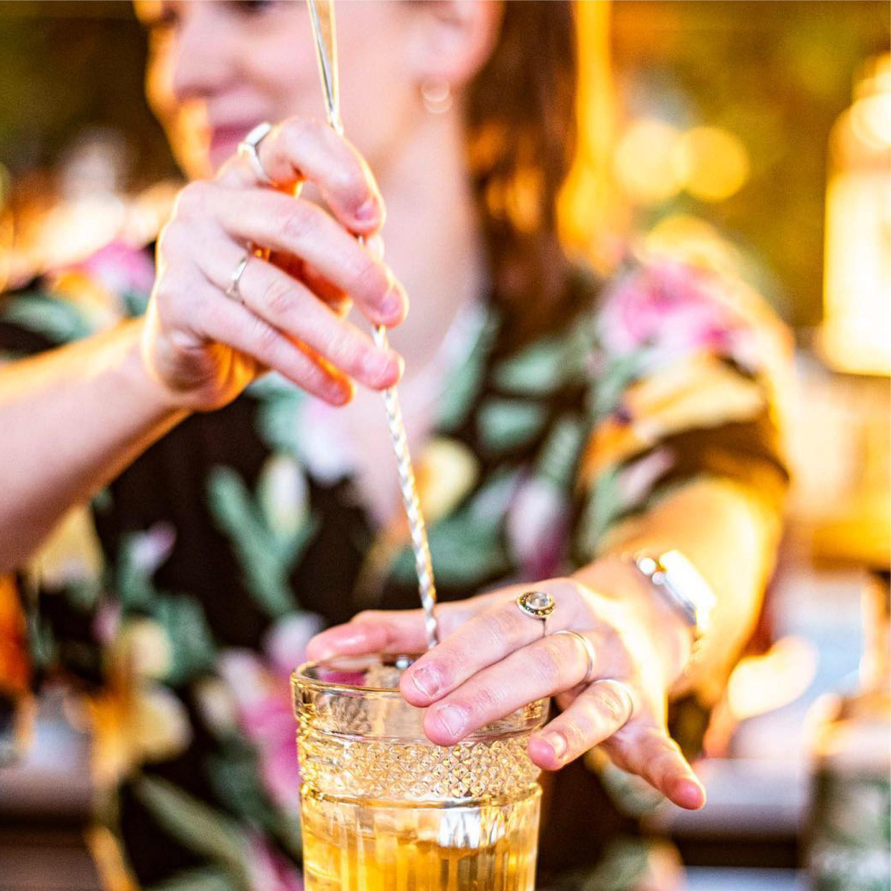
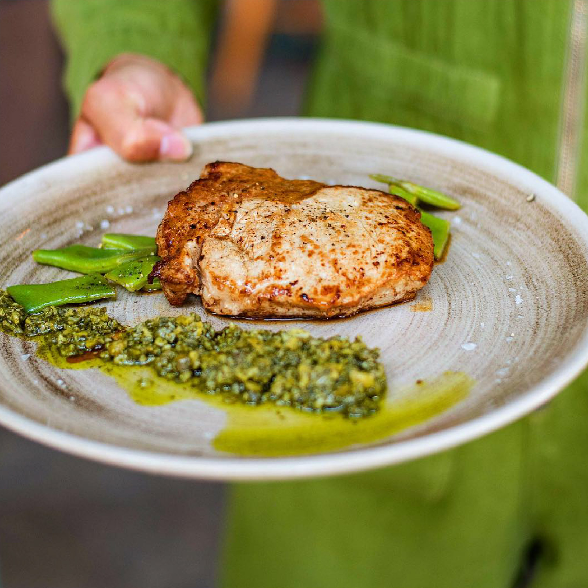
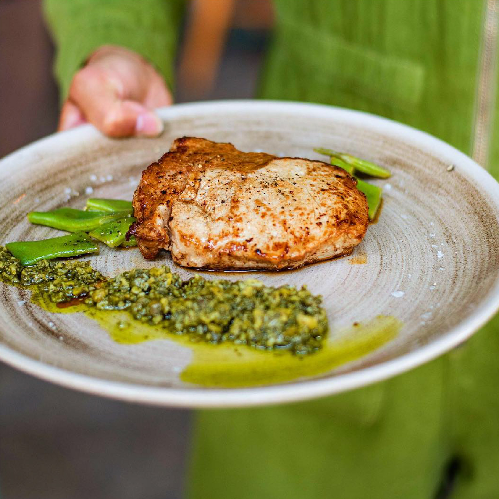

Manger chez nous!
Wij zijn elke dag geopend vanaf 9:00 voor een heerlijk ontbijtje, lunch, borrel en diner!
Bekijk menukaarten
 

Wij zijn elke dag geopend vanaf 9:00 voor een heerlijk ontbijtje, lunch, borrel en diner!
Bekijk menukaarten
Wil je voor een verjaardag, werkuitje of gewoon voor de gezelligheid met een groep bij ons komen eten of borrelen? Dat kan! Het is misschien iets anders dan normaal, maar zeker niet minder gezellig! Neem contact op voor de mogelijkheden.
Meer info opvragen
WIemand verrassen met een gezellig bezoek aan Bar Botanique? Je kunt bij ons een giftcard aan de bar halen of laten bezorgen door deze via de mail te bestellen.
Contact opnemenWelkom bij Bar Botanique; de groene oase in de Eerste van Swindenstraat in het altijd levendige Amsterdam Oost. Kom na een bezoekje aan de Dappermarkt of Oosterpark langs voor een culinaire expeditie in onze Café Tropique!
Bijkletsen met de buren onder het genot van een kop koffie, uitgebreid lunchen met vrienden, sfeervol dineren met je lief, salsa dansen op vrijdagavond en gezellig borrelen: het kan allemaal. Met een prachtige vide, die overigens ook privé afgehuurd kan worden, en een breed groepsmenu-arrangement vinden we altijd een mogelijkheid voor het organiseren van o.a. verjaardagen, vergaderingen en groepsdiners.
Bar Botanique is gevestigd in een pand met een rijke geschiedenis. Waar zich eerst de gymzaal voor de leerlingen van basisschool De Commelinschool vestigde, sierde later het populaire Café de Ponteneur op de hoek van de straat. Vandaag de dag zetten wij met alle plezier het imago van huiskamercafé van de buurt voort, maar deze keer in onze eigen stijl. Namelijk in style tropical! A bientôt!
#BarBotaniqueAmsterdam on Instagram

 



 
